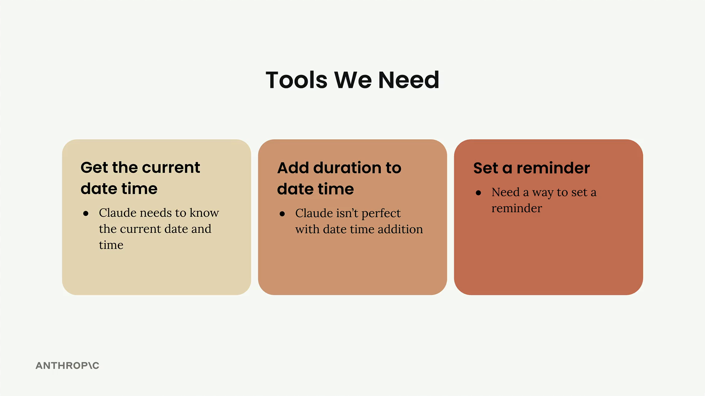
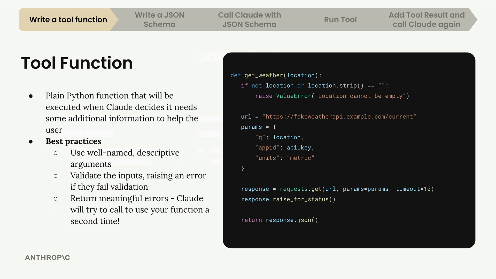

Функции-инструменты
Чему научитесь
Видео 5:22 и текст урока
К концу урока вы сможете:
- объяснить, что такое функция-инструмент;
- применять правила хорошей функции: имена, проверка входа, сообщения об ошибках;
- написать функцию
get_current_datetime.
Видео и текст урока.
Смотреть урок на Skilljar Tool functions · 5:22В приложениях на Claude часто нужно дать модели доступ к информации в реальном времени или возможность выполнять действия. Для этого и нужны функции-инструменты (tool functions) — функции на Python, которые Claude может вызывать, когда ему нужны дополнительные данные, чтобы помочь пользователю.

На картинке выше — три инструмента, которые мы будем реализовывать: получение текущих даты и времени, прибавление длительности к дате и установка напоминаний. Начнём с первого.
Что такое функция-инструмент
Функция-инструмент — обычная функция на Python, которая выполняется автоматически, когда Claude решает, что ему нужна дополнительная информация, чтобы помочь пользователю. Например, если кто-то спросит «What time is it?», Claude вызовет ваш инструмент даты и времени, чтобы узнать текущее время.

get_weather: при пустом location выбрасывает ValueError, затем обращается к API погоды и возвращает JSON.Вот пример функции-инструмента для погоды. Обратите внимание, как она проверяет входные данные и выдаёт понятные сообщения об ошибках — это важные рекомендации.
Как писать функции-инструменты
При написании функций-инструментов следуйте этим правилам:
- Говорящие имена: и имя функции, и имена параметров должны ясно показывать их назначение;
- Проверка входных данных: проверяйте, что обязательные параметры не пустые и не некорректные, и выбрасывайте ошибку, если это так;
- Понятные сообщения об ошибках: Claude видит сообщения об ошибках и может повторить вызов функции с исправленными параметрами.
Проверка особенно важна, потому что Claude учится на ошибках. Если вы выбросите понятную ошибку вроде «Location cannot be empty», Claude может снова вызвать функцию, уже с нормальным значением местоположения.
Первая функция-инструмент
Напишем функцию, которая возвращает текущие дату и время. Она принимает параметр формата даты, чтобы Claude мог запросить время в разных форматах:
def get_current_datetime(date_format="%Y-%m-%d %H:%M:%S"):
if not date_format:
raise ValueError("date_format cannot be empty")
return datetime.now().strftime(date_format)
Функция берёт текущее время через модуль datetime и форматирует его по переданной строке формата. Формат по умолчанию — год-месяц-день часы:минуты:секунды.
Проверить её можно с разными форматами:
# Default format: "2024-01-15 14:30:25"
get_current_datetime()
# Just hour and minute: "14:30"
get_current_datetime("%H:%M")
Проверка не даёт Claude передать пустую строку в качестве формата. Сама эта ошибка маловероятна, но она показывает приём: проверять входные данные и выдавать полезные сообщения, на которых Claude может учиться.
Следующие шаги
Функция — только первый шаг. Дальше нужно написать JSON-схему, которая описывает функцию для Claude, и встроить её в чат. Такой подход с функциями-инструментами даёт Claude большие возможности, а ваш код остаётся упорядоченным и удобным в поддержке.
Дальше
Следующий урок — JSON-схема, по которой Claude узнаёт, что делает инструмент и какие у него аргументы.
Оригинал урока: Tool functions.